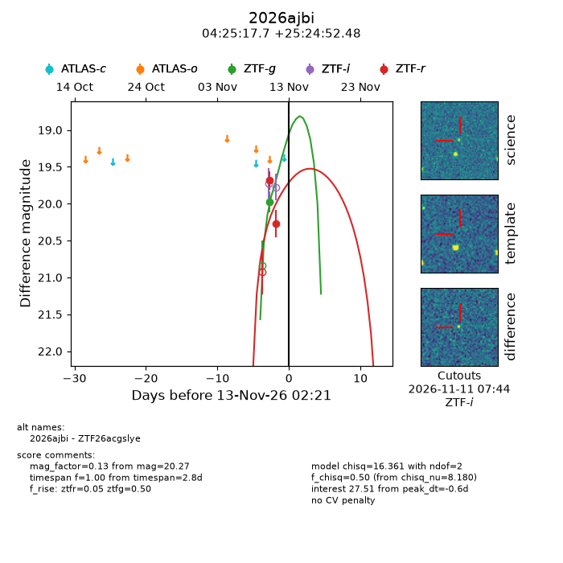
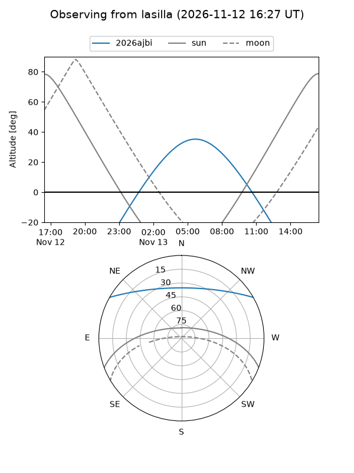
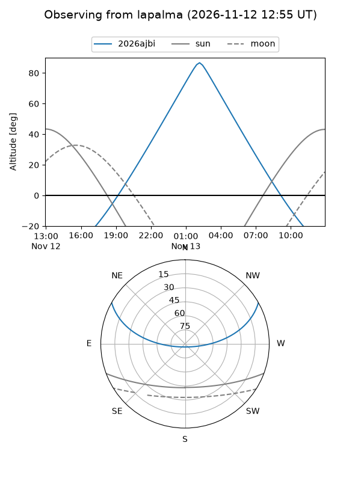
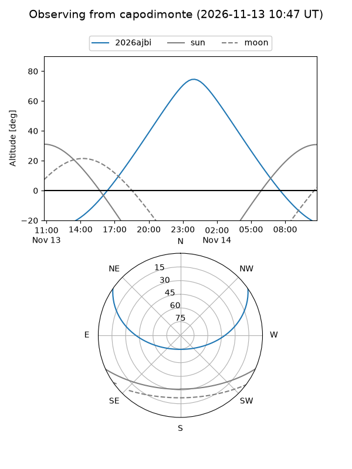
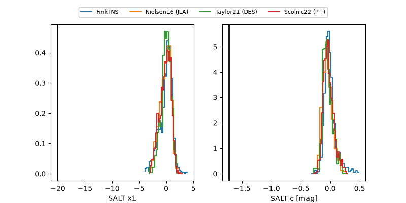

2026ajbi
Target 2026ajbi at 2026-11-13 02:22
Aliases and brokers:
FINK-ZTF: ztf.fink-portal.org/ZTF26acgslye
Lasair-ZTF: lasair-ztf.lsst.ac.uk/objects/ZTF26acgslye
ALeRCE-ZTF: alerce.online/object/ZTF26acgslye
YSE-PZ: ziggy.ucolick.org/yse/transient_detail/2026ajbi
TNS name: wis-tns.org/object/2026ajbi
Direct TNS query: direct search
alt names
ZTF26acgslye (ztf,fink_ztf)
2026ajbi (tns,yse)
Coordinates:
equatorial (ra, dec) = 66.3239,+25.41458
equatorial (HMS+DMS) = 04:25:17.75,+25:24:52.48
galactic (l, b) = (172.1001,-16.43115)
Flags:
peak dt: -0.6
Photometry:
last ztfg=19.98, ztfr=20.27
1 ztfg, 2 ztfr detections
Lightcurve

Visibility



Additional plots
